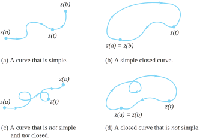
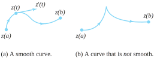
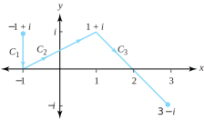
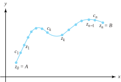
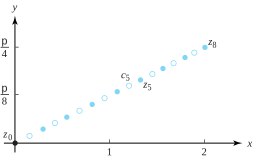
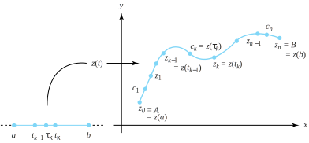
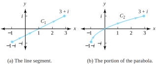
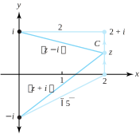

In Section 6.1 we showed how to evaluate integrals of the form \(\int_a^bf(t) \ dt\text{,}\) where \(f\) was complex-valued and \(\left[ a,\,b\right]\) was an interval on the real axis (so that \(t\) was real, with \(t\in \left[ a,\,b\right]\)). In this section, we define and evaluate integrals of the form \(\int_cf (z) \,dz\text{,}\) where \(f\) is complex-valued and \(C\) is a contour in the plane (so that \(z\) is complex, with \(z\in C\)).Theorem 6.2.11 provides our main result, which shows how to transform the latter type of integral into the kind we investigated in Section 6.1.
We use concepts first introduced in Section 1.6. Recall that to represent a curve \(C\) in the plane we use the parametric notation
\begin{equation}
C:z(t)=x(t) +iy(t), \text{ for } a \le t \le b\text{,}\tag{6.2.1}
\end{equation}
where \(x(t)\) and \(y(t)\) are continuous functions. We now place a few more restrictions on the type of curve to be described. The following discussion leads to the concept of a contour, which is a type of curve that is adequate for the study of integration.
Recall that \(C\) is simple if it does not cross itself, which means that \(z(t_1) \ne z(t_2)\) whenever \(t_1 \ne t_2\text{,}\) except possibly when \(t_1 = a\) and \(t_2=b\text{.}\) A curve \(C\) with the property \(z(b)=z(a)\) is a closed curve. If \(z(b)=z(a)\) is the only point of intersection, then we say that \(C\) is a simple closed curve. As the parameter \(t\) increases from the value \(a\) to the value \(b\text{,}\) the point \(z(t)\) starts at the initial point\(z(a)\text{,}\) moves along the curve \(C\text{,}\) and ends up at the terminal point\(z(b)\text{.}\) If \(C\) is simple, then \(z(t)\) moves continuously from \(z(a)\) to \(z(b)\) as \(t\) increases and the curve is given an orientation, which we indicate by drawing arrows along the curve. Figure 6.2.1 illustrates how the terms simple and closed describe a curve.

Figure6.2.1.The terms simple and closed used to describe curves
The complex-valued function \(z(t)=x(t) +iy(t)\) is said to be differentiable on \([a,b]\) if both \(x(t)\) and \(y(t)\) are differentiable for \(a \le t \le b\text{.}\) Here we require the one-sided derivatives 1
The derivatives on the right, \(x\,'(a^+)\text{,}\) and on the left, \(x\,'(b^{-})\text{,}\) are defined by the limits
of \(x(t)\) and \(y(t)\) to exist at the endpoints of the interval. As in Section 6.1, the derivative \(z\,'(t)\) is
\begin{equation*}
z\,'(t)=x\,'(t) + iy\,'(t), \text{ for } a \le t \le b
\end{equation*}
The curve \(C\) defined by Equation (6.2.1) is said to be a smooth curve if the function \(z\,'\) is continuous and nonzero on the interval. If \(C\) is a smooth curve, then \(C\) has a nonzero tangent vector at each point \(z(t)\text{,}\) which is given by the vector \(z\,'(t)\text{.}\) If \(x\,'(t_0)=0\text{,}\) then the tangent vector \(z\,'(t_0)=iy\,'(t_0)\) is vertical. If \(x\,'(t_0) \ne 0\text{,}\) then the slope \(\frac{dy}{dx}\) of the tangent line to \(C\) at the point \(z(t_0)\) is given by \(\frac{{y\,'(t_0)}}{x\,'(t_0)}\text{.}\) Hence for a smooth curve the angle of inclination \(\theta (t)\) of its tangent vector \(z\,'(t)\) is defined for all values of \(t\in [a,b]\) and is continuous. Thus a smooth curve has no corners or cusps. Figure 6.2.2 illustrates this concept.

Figure6.2.2.The term smooth used to describe curves
If \(C\) is a smooth curve, then \(ds\text{,}\) the differential of arc length, is given by
The function \(s(t)=\sqrt{x\,'(t)^2 + y\,'(t)^2}\) is continuous because \(x\,'\) and \(y\,'\) are continuous functions, so the length \(L(C)\) of the curve \(C\) is
Now, consider \(C\) to be a curve with parametrization
\begin{equation*}
C:z_1(t)=x(t)+iy(t) \text{ for } a \le t \le b
\end{equation*}
The opposite curve \(-C\) traces out the same set of points in the plane, but in the reverse order, and has the parametrization
\begin{equation*}
-C:z_2(t)=x(-t)+iy(-t) \text{ for } -b \le t \le -a\text{.}
\end{equation*}
Since \(z_2(t)=z_1(-t)\text{,}\)\(-C\) is merely \(C\) traversed in the opposite sense, as Figure 6.2.3 illustrates.
Figure6.2.3.The curve \(C\) and its opposite curve \(-C\)
A curve \(C\) that is constructed by joining finitely many smooth curves end to end is called a contour. Let \(C_1,\,C_2,\ldots ,\,C_n\) denote \(n\) smooth curves such that the terminal point of the curve \(C_k\) coincides with the initial point of \(C_{k+1}\text{,}\) for \(k=1,\,2,\ldots \,,n-1\text{.}\) We express the contour \(C\) by the equation
Find a parametrization of the polygonal path \(C\) from \(-1+i\) to \(3-i\) shown in Figure 6.2.5.
Solution.
We express \(C\) as three smooth curves, or \(C=C_1+C_2+C_3\text{.}\) If we set \(z_0=-1+i\) and \(z_1=-1\text{,}\) we can use Equation (1.6.2) to get a formula for the straight-line segment joining two points:
\begin{equation*}
C_1:z_1(t) = z_0+t(z_1-z_0) = (-1+i)+t[-1-(-1+i)], \text{ for } 0 \le t \le 1\text{.}
\end{equation*}
When simplified, this formula becomes
\begin{equation*}
C_1:z_1(t)=-1+i(1-t), \text{ for } 0 \le t \le 1\text{.}
\end{equation*}
Similarly, the segments \(C_2\) and \(C_3\) are given by
\begin{align*}
{4} \amp C_2 \amp \amp : z_2(t)=(-1+2t) +it, \amp \amp \text{ for } \amp \amp 0 \le t \le 1, \text{ and }\\
\amp C_3 \amp \amp : z_3(t)=(1+2t) +i(1-2t), \amp \amp \text{ for } \amp \amp 0 \le t \le 1\text{.}
\end{align*}

Figure6.2.5.The polygonal path { {\(C=C_1+C_2+C_3\)}} from \(-1+i\) to \(3-i\)

Figure6.2.6.Partition points \(\{z_k\}\) and function evaluation points \(\{c_k\}\) for a Riemann sum along the contour \(C\) from \(z=A\) to \(z=B\)
We are now ready to define the integral of a complex function along a contour \(C\) in the plane with initial point \(A\) and terminal point \(B\text{.}\) Our approach is to mimic what is done in calculus. We create a partition \(P_n=\{ z_0=A,z_1,z_2,\,.\,.\,.\,,z_n=B\}\) of points that proceed along \(C\) from \(A\) to \(B\) and form the differences \(\Delta z_k=z_k-z_{k-1}\text{,}\) for \(k=1,\,2,\,.\,.\,.\,,\,n\text{.}\) Between each pair of partition points \(z_{k-1}\) and \(z_k\) we select a point \(c_k\) on \(C\text{,}\) as shown in Figure 6.2.6, and evaluate the function \(f\text{.}\) We use these values to make a Riemann sum for the partition:
Assume now that there exists a unique complex number \(L\) that is the limit of every sequence \(\{S(P_n)\}\) of Riemann sums given in Equation (6.2.3), where the maximum of \(|\Delta z_k|\) tends toward 0 for the sequence of partitions. That number is the value of the integral of the function \(f\) along \(C\text{.}\)
provided the limit exists in the sense previously discussed.
In Definition 6.2.7 the value of the integral depends on the contour. In Section 6.3 the Cauchy-Goursat theorem will establish the remarkable fact that, if \(f\) is analytic, then \(\int_Cf(z)dz\) is independent of the contour.
Example6.2.8.
Use a Riemann sum to approximate the integral \(\int_C\exp\)\(z\ dt\text{,}\) where \(C\) is the line segment joining the point \(A=0\) to \(B=2+i\frac{\pi}{4}\text{.}\)
Solution.
Set \(n=8\) in Equation (6.2.3) and form the partition \(P_8:z_k= \frac{k}{4}+i\frac{\pi k}{32}\) for \(k=0,\,1,\,2,\ldots ,\,8\text{.}\) For this situation, we have a uniform increment \(\Delta z_k=\frac{1}{4}+i\frac{\pi}{32}\text{.}\) For convenience we select \(c_k=\frac{z_{k-1}+z_k}{2}=\frac{2k-1}{ 8}+i\frac{\pi(2k-1)}{64}\text{,}\) for \(k=1,\,2,\ldots ,\,8\text{.}\)Figure 6.2.9 shows the points \(\{z_k\}\) and \(\{c_k\}\text{.}\)

Figure6.2.9.Partition and evaluation points for the Riemann sum \(S(P_8)\)
In general, obtaining an exact value for an integral given by Definition 6.2.7 could be a daunting task. Fortunately, there is a beautiful theory that allows for an easy computation of many contour integrals. Suppose that we have a parametrization of the contour \(C\) given by the function \(z(t)\) for \(a \le t \le b\text{.}\) That is, \(C\) is the range of the function \(z(t)\) over the interval \([a,b]\text{,}\) as Figure 6.2.10 shows.

Figure6.2.10.A parametrization of the contour \(C\) by \(z(t)\text{,}\) for \(a \le t \le b\)
where \(\tau _k\) and \(t_k\) are the points contained in the interval \([a,bt]\) with the property that \(c_k=z(\tau _k)\) and \(z_k=z(t_k)\text{,}\) as is also shown in Figure 6.2.10. If for all \(k\) we multiply the \(k\)th term in the last sum by \(\frac{{t_k-t_{k-1}} }{{t_k-t_{k-1}}}\text{,}\) then we get
The quotient inside the last summation looks suspiciously like a derivative, and the entire quantity looks like a Riemann sum. Assuming no difficulties, this last expression should equal \(\int_a^bf(z(t) ) z\,'(t)\,dt\text{,}\) as defined in Section 6.1. Of course, if we’re to have any hope of this happening, we would have to get the same limit regardless of how we parametrize the contour\(C\text{.}\) As Theorem 6.2.11 states, this is indeed the case.
Theorem6.2.11.
Suppose that \(f(z)\) is a continuous complex-valued function defined on a set containing the contour \(C\text{.}\) Let \(z(t)\) be any parametrization of \(C\) for \(a \le t \le b\text{.}\) Then
We omit the proof of Theorem 6.2.11 because it involves ideas (e.g., the theory of the Riemann-Stieltjes integral) that are beyond the scope of this book. A more rigorous development of the contour integral based on Riemann sums is presented in advanced texts such as L. V. Ahlfors, Complex Analysis, 3rd ed. (New York: McGraw-Hill, 1979).
Two important facets of Theorem 6.2.11 are worth mentioning. First, Theorem 6.2.11 makes the problem of evaluating complex-valued functions along contours easy, as it reduces the task to the evaluation of complex-valued functions over real intervals—a procedure that you studied in Section 6.1. Second, according to Theorem 6.1, this transformation yields the same answer regardless of the parametrization we choose for \(C\text{.}\)
Example6.2.12.
Give an exact calculation of the integral in Example 6.2.8.
Solution.
We must compute \(\int_C\exp z\)\(dz\text{,}\) where \(C\) is the line segment joining \(A=0\) to \(B=2+i\frac{\pi}{4}\text{.}\) According to Equation (1.6.2), we can parametrize \(C\) by \(z(t)=(2+i\frac{ \pi}{4}) t\text{,}\) for \(0 \le t \le 1\text{.}\) As \(z\,'(t) = (2+i\frac{\pi}{4})\text{,}\)Theorem 6.2.11 guarantees that
Each integral in the last expression can be done using integration by parts. (There is a simpler way—see Remark 6.1.6.) We leave as an exercise to show that the final answer simplifies to \(\exp (2+i \frac{\pi}{4}) -1\text{,}\) as we claimed in Example 6.2.8.
Recall that \(C_1^+(2)\) is the upper semicircle with radius 1 centered at \(x=2\) oriented in a positive direction (i.e., counterclockwise). The function \(z(t)=2+e^{it}\text{,}\) for \(0 \le t \le \pi\) is a parametrization for \(C\text{.}\) We apply Theorem 6.2.11 with \(f(z)=\frac{1}{z-2}\text{.}\) (Note: \(f\big(z(t)\big)=\frac{1}{z(t) -2}\text{,}\) and \(z\,'(t) =ie^{it}\text{.}\)) Hence
To help convince yourself that the value of the integral is independent of the parametrization chosen for the given contour, try working through Example 6.8 with \(z(t)=2+e^{i\pi t}\text{,}\) for \(0 \le t \le 1\text{.}\)
A convenient bookkeeping device can help you remember how to apply Theorem 6.2.11. Because \(\int_Cf(z)\,dz=\int_a^bf(z(t) ) z\,'(t)\,dt\text{,}\) you can symbolically equate \(z\) with \(z(t)\) and \(dz\) with \(z\,'(t)\,dt\text{.}\) These identities should be easy to remember because \(z\) is supposed to be a point on the contour \(C\) parametrized by \(z(t)\text{,}\) and \(\frac{dz}{dt}=z\,'(t)\text{,}\) according to the Leibniz notation for the derivative.
If \(z(t)=x(t) +iy(t)\text{,}\) then by the preceding paragraph we have
where \(dx\) and \(dy\) are the differentials for \(x(t)\) and \(y(t)\text{,}\) respectively (i.e., \(dx\) is equated with \(x\,'(t)\,dt\text{,}\) etc.). The expression \(dz\) is often called the complex differential of \(z\text{.}\) Just as \(dx\) and \(dy\) are intuitively considered to be small segments along the \(x\) and \(y\) axes in real variables, we can think of \(dz\) as representing a tiny piece of the contour \(C\text{.}\) Moreover, if we write
where Equation (6.2.6) replaced \(u\big(z(t)\big)\) with \(u, \; x\,'(t)\) with \(x\,'\text{,}\) and so on.
If we use the differentials given in Equation (6.2.4), then we can write Equation (6.2.6) in terms of line integrals of the real-valued functions \(u\) and \(v\text{,}\) giving
We emphasize that Equation (6.2.7) is merely a notational device for applying Theorem 6.2.11. You should carefully apply Theorem 6.1, as illustrated in Examples 6.2.12 and Example 6.2.13, before using any shortcuts suggested by Equation (6.2.7).
where \(C_1\) is the line segment from \(-1-i\) to \(3+i\) and \(C_2\) is the portion of the parabola \(x=y^2+2y\) joining \(-1-i\) to \(3+i\text{,}\) as indicated in Figure 6.2.15.

Figure6.2.15.Two contours \(C_1\) and \(C_2\) joining \(-1-i\) to \(3+i\)
The line segment joining \((-1,-1)\) to \((3,1)\) is given by the slope intercept formula \(y=\frac{1}{2}x-\frac{1}{2}\text{,}\) which can be written as \(x=2y+1\text{.}\) If we choose the parametrization \(y=t\) and \(x=2t+1\text{,}\) we can write segment \(C_1\) as
\begin{equation*}
C_1:z(t)=2t+1+it \text{ and } dz=(2+i)\,dt, \text{ for } -1 \le t \le 1\text{.}
\end{equation*}
Along \(C_1\) we have \(f(z(t) )=2t+1+it\text{.}\) Applying Theorem 6.2.11 gives
Note that the value of the contour integral along \(C_1\) isn’t the same as the value of the contour integral along \(C_2\text{,}\) although both integrals have the same initial and terminal points.
Contour integrals have properties that are similar to those of integrals of a complex function of a real variable, which you studied in Section 6.1. If \(C\) is given by Equation (6.2.1), then the integral for the opposite contour \(-C\) is
If two functions \(f\) and \(g\) can be integrated over the same path of integration \(C\text{,}\) then their sum can be integrated over \(C\text{,}\) and we have the familiar result
If two contours \(C_1\) and \(C_2\) are placed end to end so that the terminal point of \(C_1\) coincides with the initial point of \(C_2\text{,}\) then the contour \(C=C_1+C_2\) is a continuation of \(C_1\text{,}\) and
\begin{align*}
{2} \amp C : z_1(t) =x_1(t) +iy_1(t), \amp \amp \text{ for } a \le t \le b, \text{ and }\\
\amp C : z_2(\tau) =x_2(\tau) +iy_2(\tau), \amp \amp \text{ for } c \le \tau \le d\text{.}
\end{align*}
and there exists a differentiable function \(\tau =\phi (t)\) such that
\begin{equation}
c=\phi(a), d=\phi(b), \text{ and } \phi\,'(t)>0, \text{ for } a\lt t\lt b\text{.}\tag{6.2.10}
\end{equation}
then we say that \(z_2(\tau )\) is a reparametrization of the contour \(C\text{.}\) If \(f\) is continuous on \(C\text{,}\) then we have
Equation (6.2.11) shows that the value of a contour integral is invariant under a change in the parametric representation of its contour if the reparametrization satisfies Equations (6.2.10).
We now give two important inequalities relating to complex integrals.
Theorem6.2.18.Absolute value inequality.
If \(f(t)=u(t) +iv(t)\) is a continuous function of the real parameter \(t\text{,}\) then
If \(\int_a^bf(t)\,dt=0\text{,}\) then Equation (6.2.12) is obviously true. If the integral is not zero, we write its value in polar form, say \(\int_a^bf(t)\,dt=r_0e^{i\theta _0}\text{,}\) so that \(\left\vert \int_a^bf(t)\,dt\right\vert = |r_0e^{i\theta_0}|=r_0\text{,}\) and \(r_0=\int _a^be^{-i\theta _0}f(t)\,dt\text{.}\) Taking the real part of both sides of this last equation gives
Recall that, if \(g\) and \(h\) are real functions, with \(g(t) \le h(t)\text{,}\) for all \(t \in [a,b]\text{,}\) then \(\int_a^bg(t\,dt \le \int_a^b h(t)\,dt\text{.}\) Applying this fact to the left and right sides of Equation (6.2.13) \big(with \(g(t)=\mathrm{Re}\big[e^{-i\theta _0}f(t)\big]\) and \(h(t)=|f(t)|\)\big) yields
where \(L\) is the length of the contour \(C\) and \(M\) is an upper bound for the modulus \(|f(z)|\) on \(C\text{;}\) that is, \(|f(z)| \le M\) for all \(z\in C\text{.}\)
where \(C\) is the straight-line segment from 2 to \(2+i\text{.}\)
Solution.
Here \(|z^2+1| = |z-i| \, |z+i|\text{,}\) and the terms \(|z-i|\) and \(|z+i|\) represent the distance from the point \(z\) to the points \(i\) and \(-i\text{,}\) respectively. Referring to Figure 6.2.21 and using a geometric argument, we get
\begin{equation*}
|z-i| \ge 2, \text{ and } |z+i| \ge \sqrt{5}, \text{ for } z \text{ on } C
\end{equation*}

Figure6.2.21.The distances \(|z-i|\) and \(|z+i|\) for \(z\) on \(C\)
\(z(t)=t^2-1+i(t+4)\text{,}\) for \(1 \le t \le 3\text{.}\)
(b)
\(z(t)=\sin t+i\cos 2t\text{,}\) for \(-\frac{\pi}{2} \le t \le \frac{\pi}{2}\text{.}\)
(c)
\(z(t)=5\cos t- i3\sin t\text{,}\) for \(\frac{\pi}{2} \le t \le 2\pi\text{.}\)
3.
Consider the integral \(\int_Cz^2\,dz\text{,}\) where \(C\) is the positively oriented upper semicircle of radius 1, centered at 0.
(a)
Give a Riemann sum approximation for the integral by selecting \(n=4\) and the points \(z_k=e^{i\frac{k\pi}{4}}\)\((k=0,\ldots 4)\) and \(c_k=e^{i\frac{(2k-1) \pi}{8}}\)\((k=1,\ldots 4)\text{.}\)
Solution.
The approximation simplifies to \(-2\sqrt{2} + 2 \approx -0.828427\text{.}\)
(b)
Compute the integral exactly by selecting a parametrization for \(C\) and applying Theorem 6.2.11.
Solution.
\(-\frac{2}{3}\text{.}\)
4.
Show that the integral of Example 6.2.12 simplifies to \(\exp (2+i\frac{\pi}{4})-1\text{.}\)
5.
Evaluate \(\int_Cx\,dz\) from \(-4\) to \(4\) along the following contours, as shown in Figures 6.2.24(a) and Figure 6.2.24(b).
Evaluate \(\int_Cz^2dz\text{,}\) where \(C\) is the line segment from 1 to \(1+i\text{.}\)
Solution.
\(-1+\frac{2i}{3}\text{.}\)
12.
Evaluate \(\int_C\left| z^2\right|\,dz\text{,}\) where \(C\) given by \(C:z(t)=t+it^2\text{,}\) for \(0 \le t \le 1\text{.}\)
13.
Evaluate \(\int_C\exp z\ dz\text{,}\) where \(C\) is the straight-line segment joining 1 to \(1+i\pi\text{.}\)
Solution.
\(-2e\text{.}\)
14.
Evaluate \(\int_C\overline{z}\exp z\ dz\text{,}\) where \(C\) is the square with vertices \(0\text{,}\)\(1\text{,}\)\(1+i\text{,}\) and \(i\) taken with the counterclockwise orientation.
15.
Evaluate \(\int_C\exp z\ dz\text{,}\) where \(C\) is the straight-line segment joining 0 to \(1+i\text{.}\)
Solution.
\(\exp (1+i)-1\text{.}\)
16.
Let \(z(t)=x(t) +iy(t)\text{,}\) for \(a \le t \le b\text{,}\) be a smooth curve. Give a meaning for each of the following expressions.
(a)
\(z\,'(t)\text{.}\)
(b)
\(\big|z\,'(t)\big|\,dt\text{.}\)
(c)
\(\int_a^b z\,'(t)\,dt\text{.}\)
(d)
\(\int_a^b \big|z\,'(t)\big|\,dt\text{.}\)
17.
Evaluate \(\int_C\cos z\, dz\text{,}\) where \(C\) is the polygonal path from 0 to \(1+i\) that consists of the line segments from 0 to 1 and 1 to \(1+i\text{.}\)
Solution.
\(\sin (1+i)\text{.}\)
18.
Let \(f(t)=e^{it}\) be defined on \(a \le t \le b\text{,}\) where \(a=0\text{,}\) and \(b=2\pi\text{.}\) Show that there is no number \(c \in (a,b)\) such that \(f(c)(b-a)=\int_a^bf(t)\,dt\text{.}\) In other words, the mean value theorem for definite integrals that you learned in calculus does not hold for complex functions.
19.
Use the ML inequality to show that \(|P_n(x)| \le 1\text{,}\) where \(P_n\) is the \(n^{th}\) Legendre polynomial defined on \(-1 \le x \le 1\) by
The absolute value of the integrand is \(\sqrt{x^2+(1-x^2) \cos ^2\theta}^n\text{.}\) This expression simplifies to \(\sqrt{x^2 \sin^2\theta + \cos^2\theta}^n\) (show the details for this assertion). The maximum of this expression occurs when \(x=1\text{.}\) Now simplify and apply the ML inequality.
20.
Explain how contour integrals in complex analysis and line integrals in calculus are different. How are they similar?